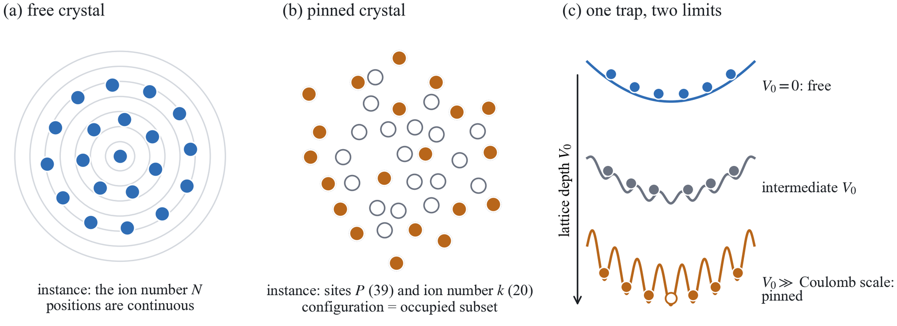
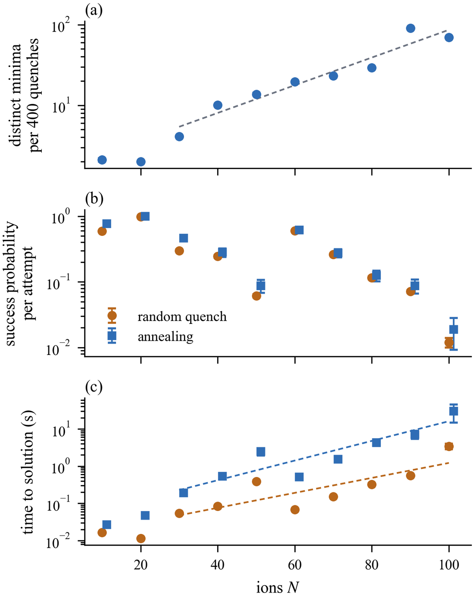
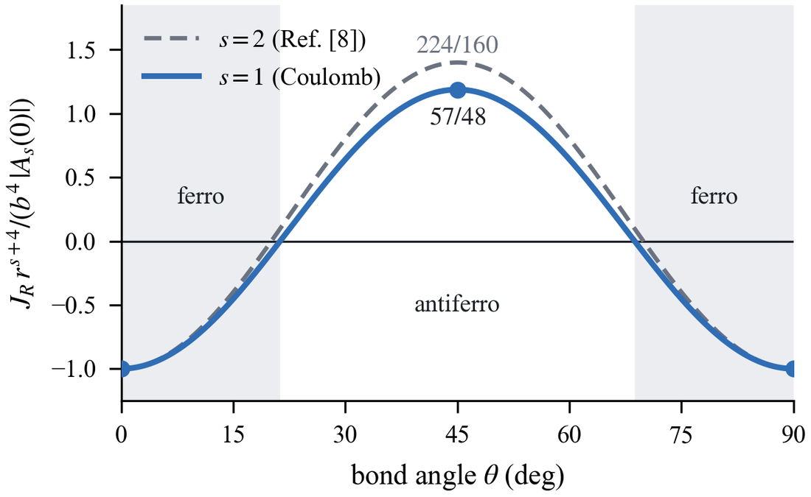
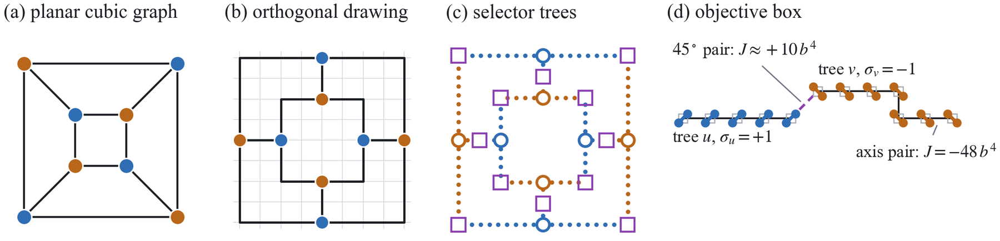
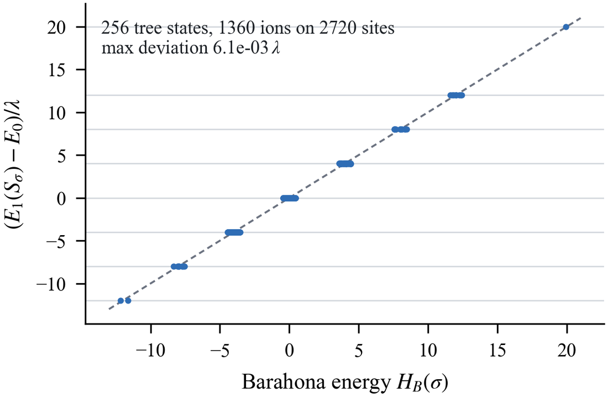
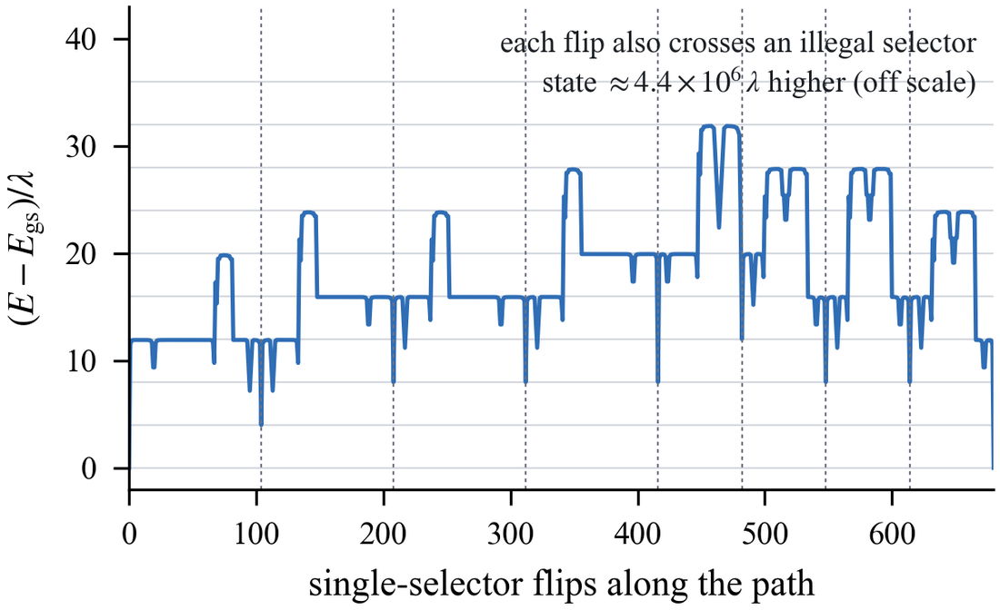
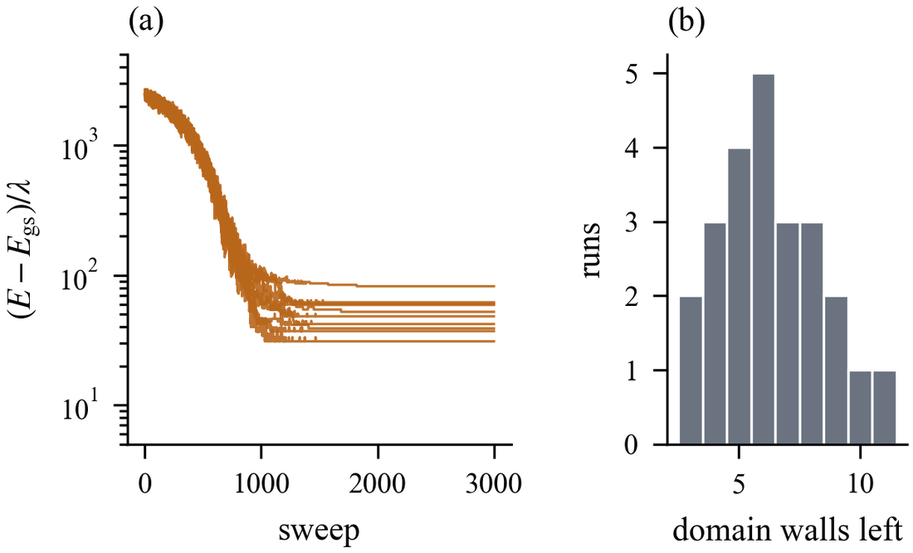

Pinned ions, hard problems
Anyone who simulates ion crystals ends up annealing them hundreds of times and keeping the lowest result. Is that because the problem is fundamentally hard? The answer depends on one physical question: are the ions free, or pinned?
The folklore
Load a hundred ions into a Paul trap and ask for their equilibrium structure. You cannot solve for it. You simulate, and because there are many metastable crystals with nearly the same energy, a single relaxation usually lands in the wrong one. Groups therefore anneal each parameter set hundreds of times, and some define the ground state operationally as the lowest configuration they recover at least ten times. The same story holds for the century-old Thomson problem of charges on a sphere, whose number of local minima grows exponentially with the number of charges.
The usual explanation is that the problem is “NP-hard.” We went looking for the proof. The Thomson problem is described in the literature as “known to be NP-hard,” citing a 1985 paper. That paper proved hardness for particles on a lattice with site-dependent weights, and it was later shown not to apply to interactions that depend only on distance, like 1/r. As far as we can tell, nobody had proved it.
Complexity in a few minutes
Computer scientists sort problems by how the effort to solve them grows with the size of the input. Three ideas are enough here.
Checking versus finding. A problem is in NP if a proposed answer can be checked quickly. Hand me a crystal configuration and an energy target, and I can check it by summing 1/r over pairs. Finding a configuration that meets the target may still be very hard.
NP-hard means programmable. A problem is NP-hard if every problem in NP can be translated into it: scheduling, Sudoku, protein design, circuit satisfiability. Physicists met this in 1982, when Barahona showed that finding the ground state of a three-dimensional Ising spin glass is NP-hard. A fast spin-glass solver would be a fast solver for everything in NP, which almost everyone believes is impossible.
Proofs are constructions. To show a physical system is NP-hard, you build a translation, called a reduction, that turns any instance of a known hard puzzle into an instance of your system, so that solving the physics solves the puzzle.
NP-hardness is about programmability. A system is NP-hard when the problem you hand it carries enough adjustable structure to encode an arbitrary hard puzzle.
Surprise one: a free crystal cannot be NP-hard
Ask what the input to the free-crystal problem actually is. The trap is fixed, so the only thing that changes from one problem to the next is the ion number N. There is exactly one ground-state problem for each integer. That is far too little information to encode arbitrary puzzles.
The paper makes this precise. For any input size there are only polynomially many distinct questions, and their answers can be written down in advance as a list of polynomial length. Problems with that property form the class P/poly, and a classic theorem of Karp and Lipton says that if an NP-hard problem were in P/poly, the whole tower of complexity classes above NP (the polynomial hierarchy) would collapse. That is not believed to happen, so free crystals are not NP-hard. The argument never uses the Coulomb law, so it covers the Thomson problem too.
Complexity classes can be built from how many alternating “there exists” and “for all” questions a problem contains.
One “there exists” is NP: is there a configuration with energy below τ? A single example settles it.
One “for all” is the mirror image: do all configurations have energy above τ? No single example can prove that. This is why an annealing study can report the lowest crystal it found but cannot certify that nothing lower exists.
Two alternations combine them: is there a configuration such that all others lie above it? That is the full statement “this is the ground state.” Three alternations look like a game: is there a move such that for every reply there is a winning counter-move? Each extra alternation is believed to give a genuinely harder class, and the infinite stack of these levels is the polynomial hierarchy.
A collapse would mean that above some level, adding more alternations stops buying any extra power, so the infinite tower is really only a few stories tall. Karp and Lipton showed that if an NP-hard problem were in P/poly, the tower would collapse to its second level. Nobody has proved that it doesn't collapse, but it is believed almost as firmly as P ≠ NP, which would flatten the tower completely. Calling free crystals NP-hard would therefore imply a dramatic, unexpected fact about computation itself.

None of this makes free crystals easy, as the next figure shows. We relaxed crystals of up to 100 ions in a two-dimensional trap from thousands of random starts. The number of distinct metastable crystals grows like eN/25. A random relaxation finds the true ground state about 1% of the time at N = 100, and the expected time to find it grows tenfold every 50 or so ions. Annealing helps per attempt but costs more per attempt, and its time to find the ground state grows exponentially as well.

So the free crystal is hard in an exponential-search sense, with no structure for a clever algorithm to exploit. It is not hard in the NP sense, because there is nothing to program.
Surprise two: pin the ions and the problem becomes NP-hard
Now superimpose an optical lattice, a tweezer array, or a segmented-electrode potential deep enough that each ion sits at the bottom of a well. The ions can no longer move continuously. The only freedom left is which wells to fill. The well pattern is now part of the problem, and it can be chosen freely. That is the room needed to program.
The paper proves that choosing which k wells to fill so as to minimize the Coulomb energy is NP-hard in two and three dimensions. If energies are only needed to finite precision, as in any real experiment or simulation, it is NP-complete: as hard as anything in NP, and no harder.
The physics trick: hide bits in quadrupoles
The obvious encoding fails. You might let “well occupied” mean 1 and rely on repulsion to keep occupied wells apart. But the Coulomb interaction is long range: every ion talks to every other ion, and the combined pull of all the distant pairs swamps any local logic you try to build.
The fix is a multipole argument. Build each bit from a tiny square of four wells holding two ions, and let the bit be which diagonal the ions sit on. Both choices have the same charge and the same (zero) dipole moment, and they differ only at quadrupole order. The interaction between two such bits therefore falls off as 1/r5 instead of 1/r. The long-range Coulomb force becomes short-range logic.
The coupling between two squares separated by a vector at angle θ is
J ∝ (9/2 − (105/2) cos 4θ) b4/r5,
where b is the size of the square. Along the lattice axes it is ferromagnetic (−48 in these units), so neighboring squares copy each other's bit and a chain of them acts as a wire. At 45° it is antiferromagnetic (+57), so two squares meeting there prefer to disagree.

Encode information in rearrangements that leave the charge and dipole unchanged, not in occupation. Such a flip changes only the quadrupole, so distant squares feel it only weakly, as 1/r5, which turns an all-to-all interaction into a local circuit.
With wires and “not both” junctions you can build a circuit for a classic NP-hard puzzle: given a network, pick as many nodes as possible with no two neighbors picked (a maximum independent set). Each node becomes a three-armed tree of wires, each link becomes a 45° junction, and a small bias makes “picked” favorable. The lowest-energy arrangement of the ions spells out the best answer.

The Coulomb case is harder than the inverse-square case solved earlier this year. The interaction decays more slowly and the 45° coupling is relatively weaker, so the bookkeeping is tighter: in the worst spot the coupling that keeps a wire consistent beats everything working against it by 48 to 42, a 12% margin.
Seeing it work
We built the full instance for the cube network above: 1,360 ions on 2,720 wells. For all 256 logical states we computed the exact Coulomb energy, summing 1/r over every pair. The energies collapse onto evenly spaced levels, exactly as the puzzle's own scoring predicts, to better than 1% of the level spacing. The crystal really does compute the puzzle.

The resulting landscape looks like a spin glass. The two best answers are degenerate, but moving from one to the other means flipping whole trees, and the energy along the way climbs 32 times the level spacing as domain walls form and travel. Moving a single ion makes it far worse, roughly four million times the level spacing.

Simulated annealing on this crystal behaves accordingly. None of 24 runs found the ground state. Every run froze with between 3 and 11 domain walls stuck inside the wires, even though the puzzle has only 256 logical answers.

At a glance
| Free crystal | Pinned crystal | |
|---|---|---|
| You specify | the number of ions | the well landscape and the number of ions |
| Configuration | continuous positions | which wells are filled |
| NP-hard? | no, unless the polynomial hierarchy collapses | yes, in 2D and 3D |
| In practice | exponential search, about 10× per 50 ions | glassy: near-degenerate states behind large barriers |
Why it matters, and what is open
For experiments with deep pinning potentials, the result says no algorithm can be guaranteed to find the optimal loading pattern efficiently, so heuristics are unavoidable. Mixed-species crystals raise related questions. In single-molecule spectroscopy, one molecular ion sits among laser-cooled atomic ions and is read out through the crystal's motion, and where it sits is itself an optimization over many nearly degenerate configurations.
Several questions are open, and some are physics questions in disguise.
- Is there a complexity transition? Free crystals are not NP-hard and deeply pinned ones are. What happens at intermediate lattice depth, where ions can partly leave their wells?
- How many ground states? Counting them is a question about zero-temperature entropy, and its complexity is unknown.
- Exactly how hard? Checking an answer exactly means comparing sums of square roots, a famous unsolved problem in its own right.
The logical core of the proof has been checked by machine, in the Lean proof assistant. The geometric estimates are proved by hand, and a few numerical constants are being certified.
Glossary
- NP
- Problems whose proposed answers can be checked quickly.
- NP-hard
- At least as hard as every problem in NP; any of them can be translated into it.
- NP-complete
- Both in NP and NP-hard: the hardest problems whose answers are easy to check.
- Reduction
- An efficient translation from one problem into another that preserves the answer.
- Polynomial hierarchy
- The tower of classes built from alternating “there exists” and “for all” questions; NP is its first level. A collapse means the tower is only finitely tall.
- P/poly
- Problems solvable quickly with the help of a precomputed list whose length grows only polynomially with input size.
- Time to solution
- Expected time to reach the ground state with a randomized method: cost per attempt divided by the success probability per attempt.
P. Navarro and D. Patterson, “When is finding the ground state of an ion Coulomb crystal NP-hard?”, manuscript in preparation (2026). The inverse-square result it builds on is M. Emmerich, arXiv:2608.23506 (2026).